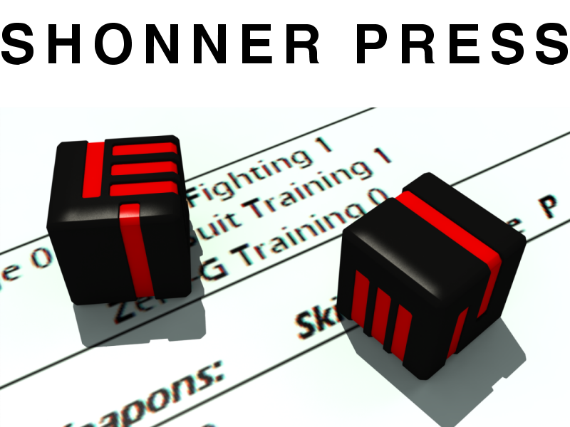

diceroll 3.1 Overview¶
diceroll 3.1 is easy-to-use open source die rolling software. Written in Classic Python 2.5 and using a variety of IDEs, diceroll 3.1 supports many gaming and RPG die rolling conventions.
diceroll 3.1 also supports logging, error reporting, and debugging of rolls made.
The free-to-use source is available at its GitHub repository.
This documentation explains how to install and use the diceroll module for your gaming projects.
The Traveller game in all forms is owned by Far Future Enterprises. Copyright 1977 - 2021 Far Future Enterprises. Traveller is a registered trademark of Far Future Enterprises.